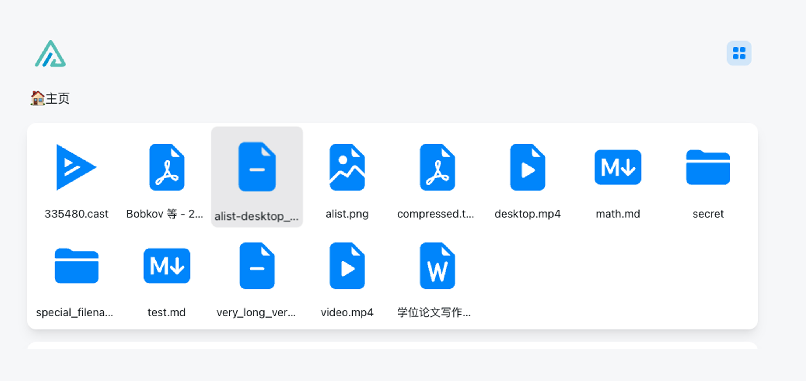
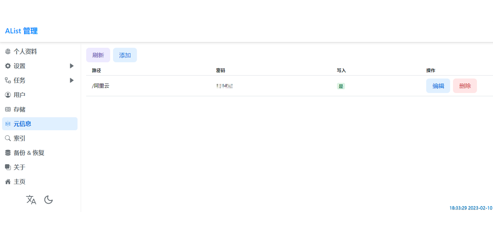
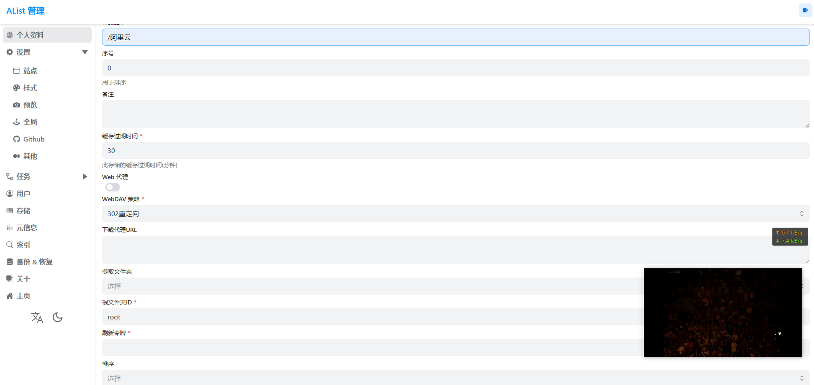

Alist
AList是一个支持多种存储，支持网页浏览和 WebDAV 的文件列表程序。或者说是一个网盘聚合器。可以将你的网盘挂载到一起，方便统一管理。
  
 如何部署在线 Alist
如何部署在线 Alist
什么是 Alist
- AList是一个支持多种存储的文件列表程序，允许用户将不同网盘挂载在一起统一管理。它可以安装在任何连接网络的设备上，如服务器或路由器。
支持的网盘有：本地电脑磁盘、FTP、SFTP、WebDAV、SMB、对象存储、115、123、百度、阿里云、MEGA、谷歌云盘、谷歌相册、移动、天翼、onedrive、迅雷、夸克、蓝奏云、迅雷、Cloudreve等等。
功能列表
- 支持 WebDAV： AList 支持所有 WebDAV 存储，这是一种用于访问文件的标准。
- 受保护的路由：为特定路径添加密码保护和身份验证
- 文件预览： 支持视频、音频、文档、PDF、图片预览等，甚至支持 ipa 安装
- 打包下载/批量下载：使用浏览器的 stream api 支持打包下载，无需使用服务器 / 使用Aria2进行批量下载支持文件夹
- 离线下载：将种子内容离线下载到指定的目录內
- 保险箱加密/解密文件：任何人都可以安全地将加密数据存储在远程存储提供商上。数据存储在保险箱中，提供商只能看到保险箱，看不到您的数据。
- 更多新功能：包括文本编辑器、README/HTML 渲染、文件永久链接、Cloudflare Workers 代理等